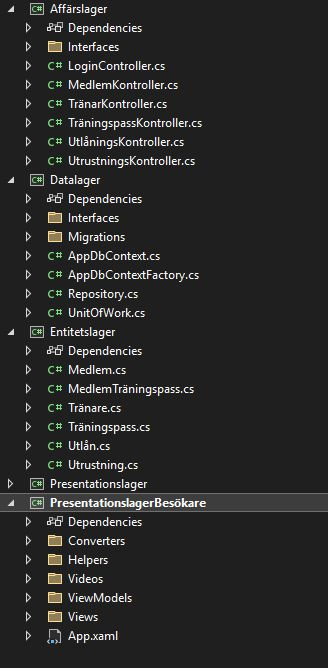
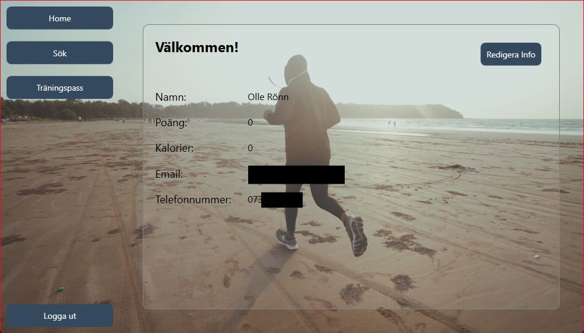
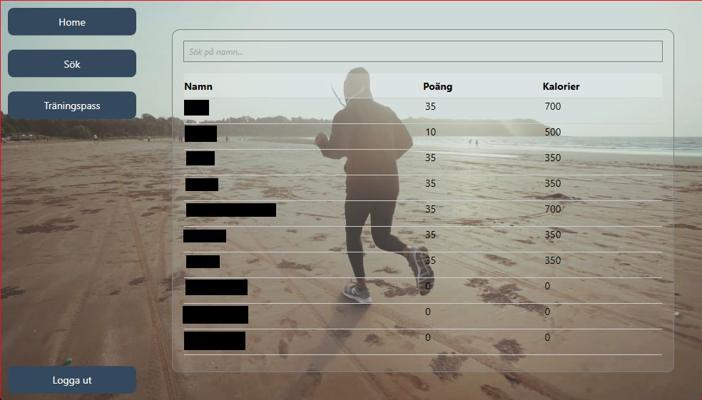
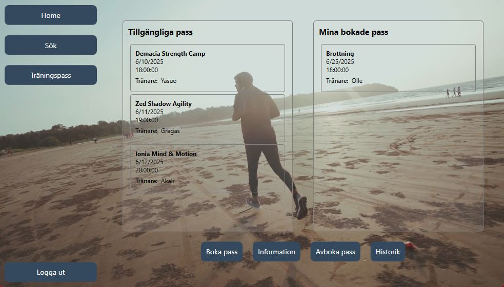
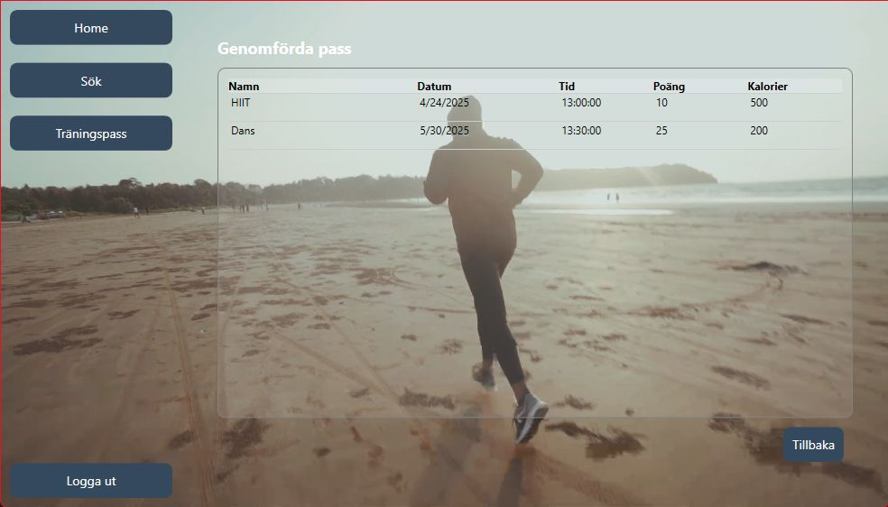
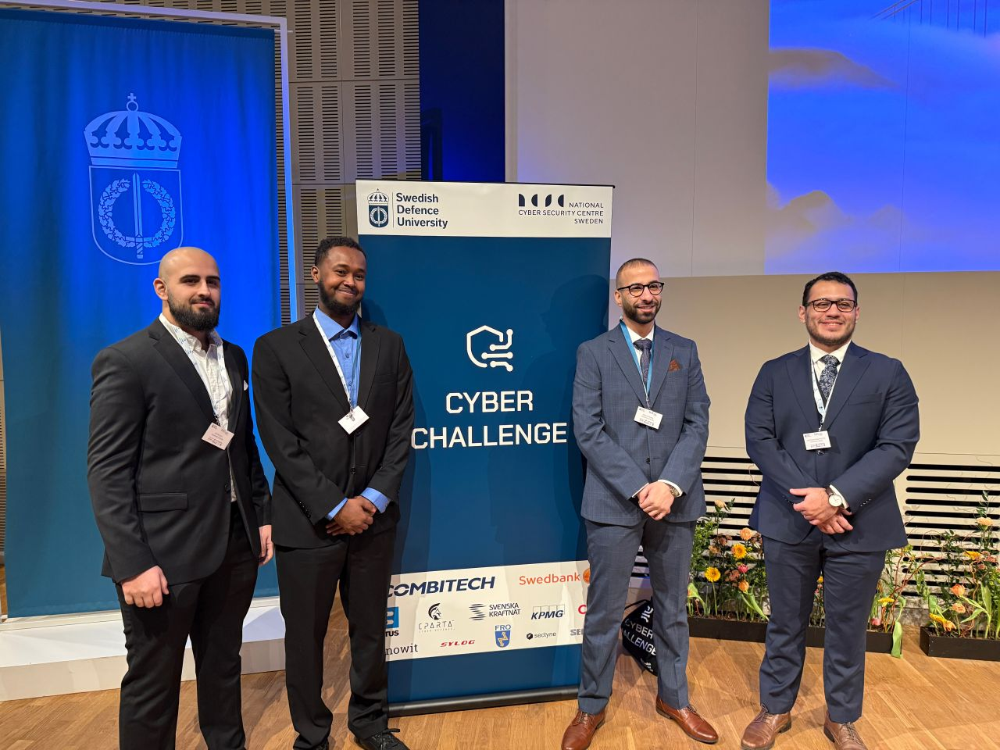

Examensarbete inom AI, beslutsstöd och obemannade butiker
2026-04-08
I mitt examensarbete undersöker jag hur ett IT baserat beslutsstödssystem kan utformas för att identifiera och bedöma risksituationer i obemannade butiker. Fokus ligger på hur artificiell intelligens, multimodal data och analysmodeller kan kombineras för att skapa ett system som kan upptäcka avvikande eller misstänksamt beteende i en miljö där traditionell personalövervakning saknas.
Arbetet utgår från att risk i en obemannad butik inte kan förstås genom en enskild faktor, utan måste bedömas utifrån flera samtidiga indikatorer. Därför analyserar jag hur olika datakällor, såsom video, passerings och transaktionsdata, kan användas tillsammans för att skapa en mer komplett lägesbild av vad som händer i butiken.
En viktig del av arbetet är att undersöka hur AI kan användas för att tolka händelser i videodata, till exempel genom att identifiera personer, följa beteendemönster och beskriva vad som sker i ett besök. Denna information kan därefter fungera som underlag i ett beslutsstödssystem som väger samman flera riskindikatorer och hjälper till att flagga situationer som bör granskas närmare.
Jag tittar också på hur multikriteriell analys kan användas för att strukturera riskbedömningen. Det innebär att olika faktorer, såsom sannolikheten för avvikande beteende, kvaliteten i tillgänglig data, ekonomiska konsekvenser och integritetsrisker, kan vägas mot varandra i stället för att systemet bygger på enstaka fasta regler.
Eftersom examensarbetet behandlar videoanalys och beteendedetektion är även informationssäkerhet och integritet en viktig del av studien. Därför analyserar jag hur ett sådant system skulle behöva utformas för att ta hänsyn till dataminimering, åtkomstkontroll, säker lagring och relevanta juridiska och etiska krav, särskilt i relation till kameraövervakning och GDPR.
Examensarbetet ger mig möjlighet att arbeta tvärdisciplinärt med flera områden inom IT, bland annat systemdesign, AI, dataanalys, beslutslogik, informationssäkerhet och teknisk utvärdering. Målet är inte bara att föreslå en teknisk lösning, utan att analysera hur en sådan lösning kan utformas på ett sätt som är praktiskt relevant, akademiskt motiverat och realistiskt i en verklig butiksmiljö.
Dual boot med grub och Apache2 webbserver
2026-02-14
Allt började med ett växande intresse för Linux, vilket ledde till att jag valde att installera Ubuntu på min dator i en dual boot lösning med GRUB.
Som en del av projektet satte jag först upp en egen webbserver i Apache2 och byggde en personlig hemsida för att skapa ett digitalt portfolio. Det gav mig praktisk erfarenhet av Linux, webbserverkonfiguration, filhantering, nätverk och hur en webbplats faktiskt publiceras och görs tillgänglig.
För att göra lösningen säkrare valde jag då att inte exponera webbservern direkt mot internet. I stället använde jag en Cloudflare Tunnel, vilket gjorde det möjligt att publicera tjänsten utan att öppna portar i hemnätverket. På så sätt skapades en krypterad tunnel mellan Cloudflare och min server, där Cloudflare fungerade som reverse proxy med grundläggande DDoS-skydd, trafikfiltrering och HTTPS via giltigt TLS-certifikat.
Efter att ha byggt och drivit lösningen på detta sätt insåg jag att hemsidan inte behövde hostas direkt från min Linux-dator. Nästa steg blev därför att modernisera publiceringen genom att flytta den till Cloudflare Pages.
Hemsidans kod ligger i dag på GitHub, och jag har satt upp ett CI/CD flöde där ändringar i repot automatiskt byggs och publiceras via Cloudflare Pages. Det innebär att varje uppdatering kan deployas snabbare, mer strukturerat och mer driftsäkert än i den ursprungliga lösningen. Jag gick därmed från en mer manuell, serverbaserad publicering till ett arbetsflöde som liknar modern frontend- och webbutveckling i praktiken.
Projektet har gett mig praktisk erfarenhet av flera delar inom IT: Linux, boot-hantering, Apache2, nätverk, reverse proxy, Cloudflare Tunnel, DNS, HTTPS/TLS, GitHub och automatiserad publicering med CI/CD. Det blev också ett tydligt exempel på hur en lösning kan utvecklas från en lokal och mer infrastrukturtung implementation till en mer skalbar och underhållsvänlig molnbaserad leveransmodell.
Home assistant integrerat hem.
Jag hade en iPad hemma som jag ville använda som en fast display för att förenkla vardagen med hjälp av tekniska lösningar.
Därför valde jag att installera Home Assistant på en Raspberry Pi och integrera den med iPaden som kontrollpanel i hemmet.
Under den torra vintern märkte jag att jag fick mer näsblod än vanligt, vilket gjorde att jag började undersöka hur jag kunde använda smarta hem lösningar för att förbättra inomhusmiljön.
Jag integrerade därför luftfuktare och sensorer i hemmet för att kunna övervaka och reglera luftfuktigheten.
Smart belysning var självklart också en av de första funktionerna jag byggde in i systemet.
Jag hämtade även API:er från Trafikverket och satte upp trafikkameror på displayen, eftersom det ofta är köer på Hisingen.
För att ytterligare underlätta vardagen skapade jag också en digital anslagstavla för hållplatsen nära min lägenhet.
Dessutom integrerade jag både mitt eget och min sambos schema, så att vi enkelt kunde få en gemensam överblick direkt via iPaden i hallen.
Projektet gav mig en bättre förståelse för hur smarta hem fungerar i praktiken och hur automation kan användas för att skapa konkreta förbättringar i vardagen.


Gym applikation i C# .NET
Jag och två klasskamrater skapade en applikation i C# .net.
Appen består av två separata användargränssnitt: i det ena kan personal lägga in pass, hantera utrustning och låna ut träningsartiklar till medlemmar; i det andra kan medlemmar boka pass, se sin historik, sina poäng och antalet förbrända kalorier. Medlemmar kan också söka efter andra medlemmar och se deras poäng.
Vi har använt MVVM strukturen, vilket innebär att presentation (Views), logik (ViewModels) och data (Models) hålls strikt åtskilda genom databindning via INotifyPropertyChanged och ICommand. Lösningen är organiserad i fyra lager:
Presentation: två separata WPF projekt (personal och besökargränssnitt)
Affärslager: controller klasser för inloggning, medlemshantering, utrustning och träningspass.
Entitetslager: domänklasser som Member, Equipment och TrainingSession
Datalager: Entity Framework Code First, kombinerat med LINQ, där vi har implementerat UnitOfWork och Generic Repository mönster för alla CRUD operationer
Applikationen har en databas där jag kan logga mina träningspass och se min utveckling över tid.
Vi har dokumenterat hela processen i GitHub samt genom UML diagram: användningsfallsdiagram, domän och designklassdiagram, systemsekvens och designsekvensdiagram samt systemoperationskontrakt.
Nedan ser ni bilder på applikationen för medlemmar och hur lösningen ser ut i solution explorer.





Semi Finalist i Cyberchallange 2025
Jag deltog i Cyberchallange 2025 och lyckades ta mig till semifinalen.
Min Grupp skickade in vårat projekt till tävlingen genom högskolan och gick vidare till att få tävla i Försvarshögskan i Stockholm!
Cyberchallange är en tävling där deltagare får lösa olika utmaningar inom cybersäkerhet, webbsäkerhet och nationellsäkerhet.
Under tävlingen fick jag möjlighet att testa mina färdigheter och lära mig nya tekniker inom cybersäkerhet.
Jag fick även träffa väldigt kompetenta personer inom cybersäkerhet och få inspiration från deras erfarenheter. Som t.ex. CISO för Swedbank.
